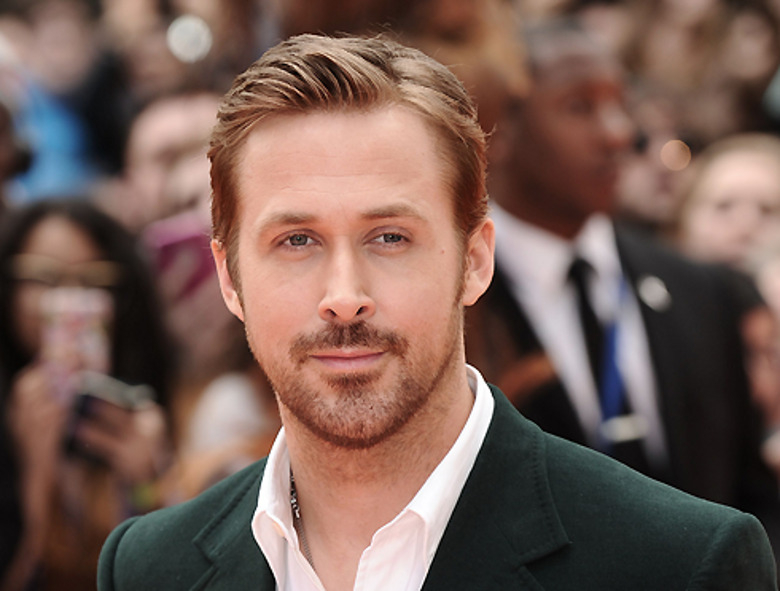

Старт карьеры
Выступал в знаменитом детском шоу на канале Disney вместе с будущими мировыми звездами: Джастином Тимберлейком, Бритни Спирс и Кристиной Агилерой.
Популярный канадский актёр, номинант на «Оскар» и обладатель «Золотого глобуса». Начинал карьеру в «Клубе Микки Мауса», прославился ролями в независимом кино и блокбастерах («Дневник памяти», «Драйв», «Ла-Ла Ленд», «Бегущий по лезвию 2049», «Барби»). Известен амплуа молчаливого, но харизматичного героя.
Связаться со мной ›
Райан Гослинг в фильме «Барби» играет роль Кена — стереотипного бойфренда главной героини, который отправляется с ней из идеального Барбиленда в реальный мир. Его персонаж — комичный, неуверенный в себе, но любящий Кен, который переживает кризис самоопределения.

Стильный криминальный триллер, где Райан Гослинг играет безымянного каскадёра и автомеханика, подрабатывающего перевозчиком преступников. Молчаливый антигерой в куртке со скорпионом навсегда закрепился в поп-культуре и породил волну мемов «literally me».

Ключевые этапы моего творческого пути: от детских шоу до главных голливудских блокбастеров и номинаций на премию «Оскар».
Выступал в знаменитом детском шоу на канале Disney вместе с будущими мировыми звездами: Джастином Тимберлейком, Бритни Спирс и Кристиной Агилерой.
Сыграл Ноя Кэлхуна в культовой романтической драме. Эта роль принесла мне первую широкую мировую известность и статус романтического героя.
Роль джазового пианиста Себастьяна. Ради фильма я научился играть на фортепиано с нуля. Получил «Золотой глобус» и номинацию на «Оскар» за лучшую мужскую роль.
Помимо актёрской игры, я пишу собственную музыку, снимаю инди-кино как режиссёр и даже занимаюсь столярным делом в свободное время.